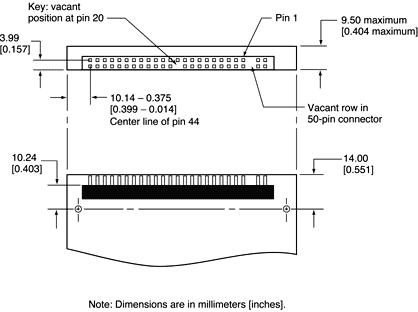

The internal hard disk has a 48-pin connector that carries both the ATA signals and the power for the drive. The connector has the dimensions of a 50-pin connector, but with one row of pins removed, as shown in Figure 3-4. The remaining pins are in two groups: pins 1–44, which carry the signals and power, and pins 45–48, which are reserved. Pin 20 has been removed, and pin 1 is located nearest the gap, rather than at the end of the connector.
Figure 3-4 Hard disk connector and location
